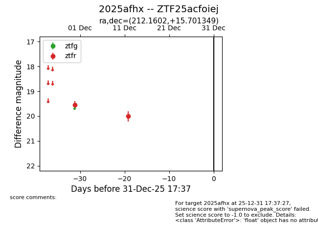
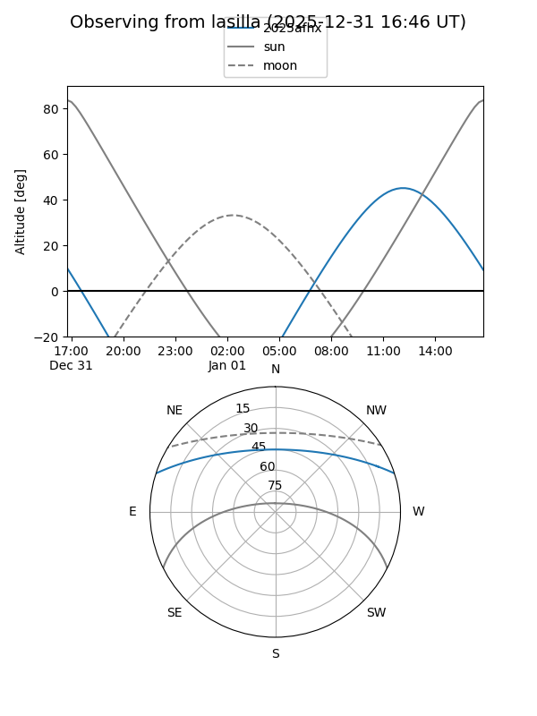
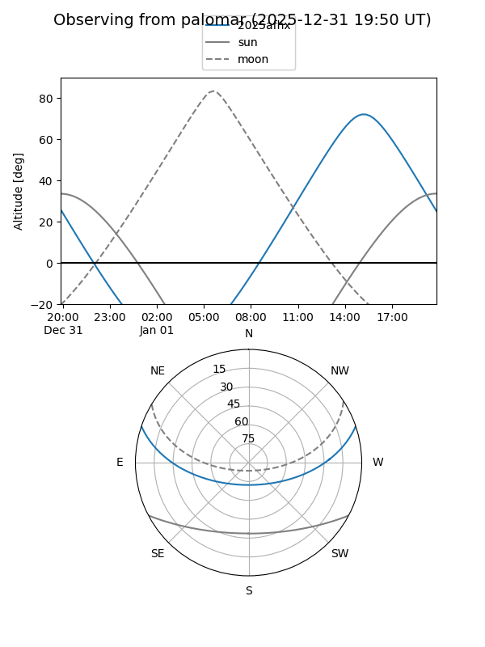

2025afhx
Target 2025afhx at 2025-12-31 16:59
Aliases and brokers:
FINK:
Lasair:
ALeRCE:
TNS:
YSE:
alt names
ZTF25acfoiej (ztf,fink_ztf)
2025afhx (tns,yse)
Coordinates:
equatorial (ra, dec) = 212.1602,+15.70135
equatorial (HMS+DMS) = 14:08:38.44,+15:42:04.86
galactic (l, b) = (4.3372,+68.75266)
Flags:
Photometry:
last ztfr=20.01
2 ztfr detections
Lightcurve

Visibility


Additional plots